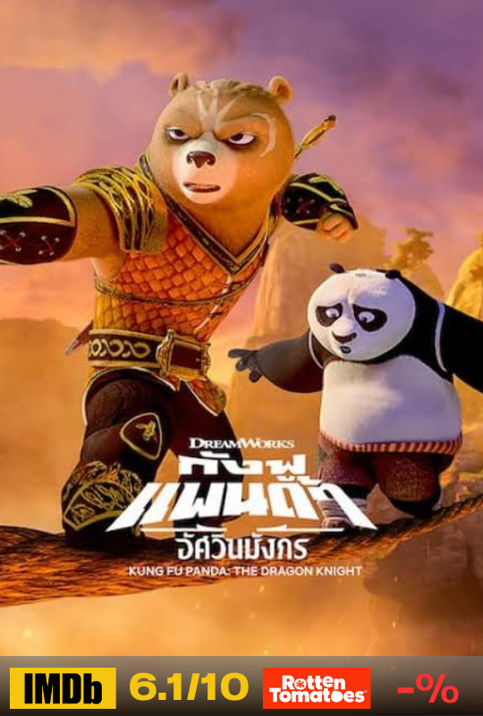
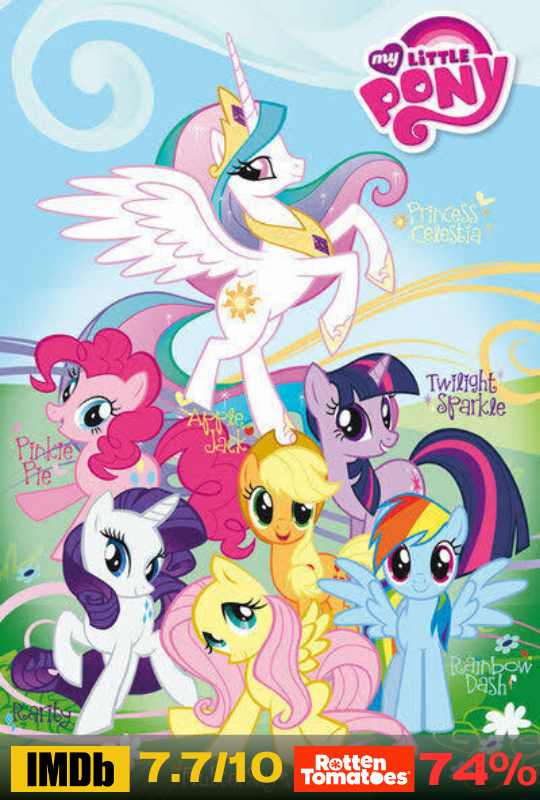
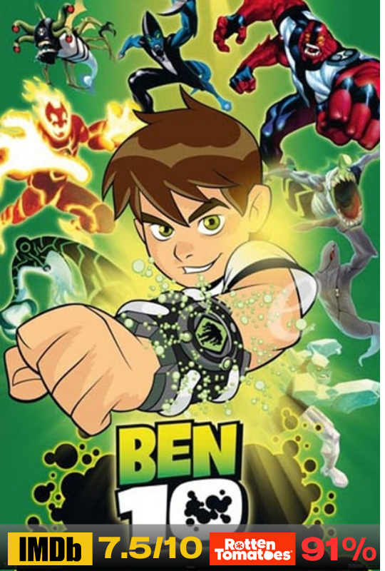
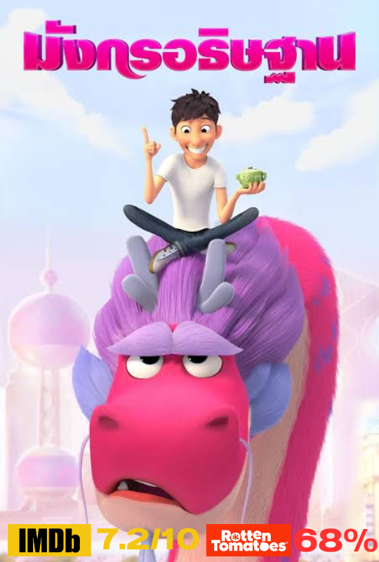
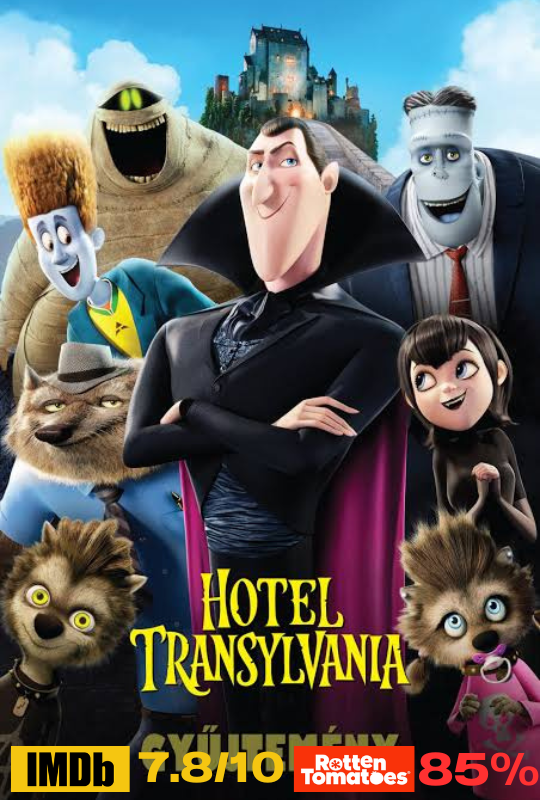
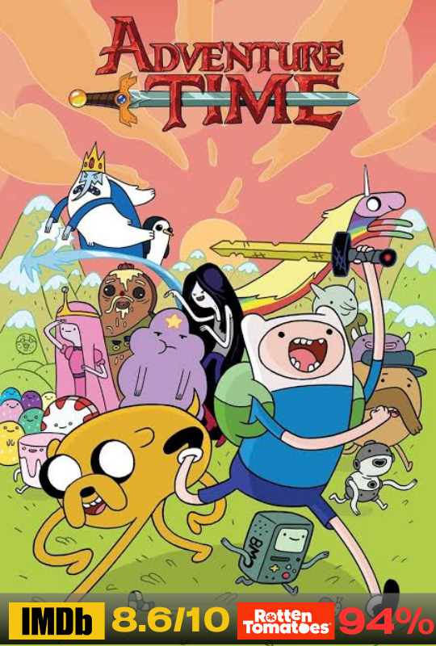
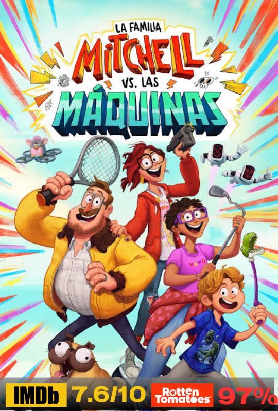
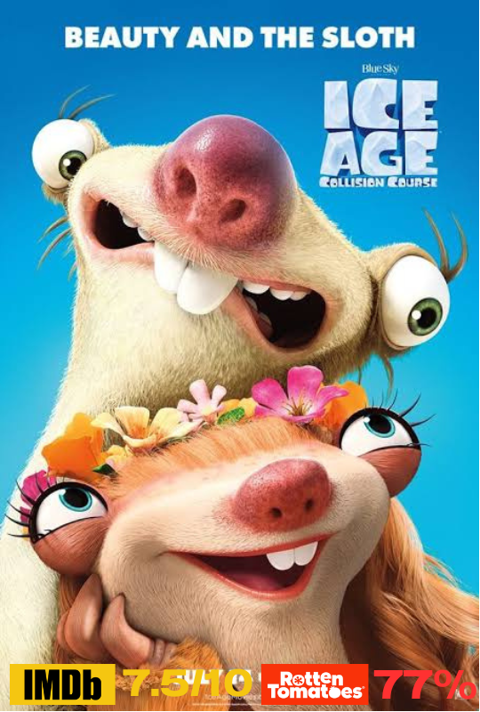

1.Kung Fu Panda: The Dragon Knight (2022)

คะแนนรีวิวจากเว็บไซต์ IMDB 6.1/10
คะแนนรีวิวจากเว็บไซต์ Rotten Tomatoes -%
เรื่องย่อ เปิดเรื่องมาเราจะได้เห็น โป ปรมาจารย์กังฟูที่รู้จักกันในชื่ออาจารย์มังกร เขาเริ่มเบื่อกับการใช้ชีวิตที่ร้านก๋วยเตี๋ยว จึงได้ออกเดินทางเพื่อตะลอนกินทั่วเมืองจีน
และที่แรกที่เขาจะไปคือร้านซาลาเปาใน หมู่บ้านแวนคูน ซึ่งเป็นที่เก็บของถุงมือวู่เกา อาวุธในตำนาน และเมื่อไปถึง ปรากฎว่าเขาได้เจอกับวายร้าย 2 พี่น้องที่ได้บุกมาเพื่อแย่งชิงถุงมือ
แต่ทหารประจำหมู่บ้านก็สกัดโจนทั้ง 2 ไว้ได้ ทว่าความซุ่มซ่ามของโปได้ทำให้เกิดเรื่องวายป่วงจนทั้งคู่หนีไปได้พร้อมกับถุงมือ ทำให้โปถูกชาวบ้านขับไล่ และถูกปลดออกจากการเป็นอาจารย์มังกร
จากนั้นโปก็ได้เจอกับอัศวินอังกฤษที่ออกตามล่าโจรทั้งสอง อัศวินคนนี้มีฉายาว่า ดาบพเนจร สุดท้ายทั้ง 2 ก็ได้ร่วมมือกันเพื่อตามล่าโจร เพราะโปต้องการถุงมือกลับมาเพื่อรักษาชื่อเสียงของเขาไว้
ส่วนอัศวินก็ต้องการจับวายร้ายกลับอังกฤษ

คะแนนรีวิวจากเว็บไซต์ IMDB 7.7/10
คะแนนรีวิวจากเว็บไซต์ Rotten Tomatoes 74%
เรื่องย่อ ทไวไลท์ สปาร์คเคิล ม้ายูนิคอร์น รักเรียน ได้รับมอบหมายจาก เจ้าหญิงเซเลสเทรีย ให้เธอไปเรียนรู้ความมหัศจรรย์แห่งมิตรภาพที่หมู่บ้าน
Ponyville พร้อม คู่หูของเธอ สไปค์ ลูกมังกรน้อย เธอได้ พบกับ เพื่อนม้าแสนสนิท อีก 5 ตัว คือ แอปเปิ้ลแจ็ค เรนโบว์แดช ฟลัตเตอร์ชาย พิ้งค์กี้พาย แรริตี้
เธอได้เรียนรู้เกี่ยวกับความมหัศจรรย์ของมิตรภาพ จากเพื่อนๆ ของเธอ

คะแนนรีวิวจากเว็บไซต์ IMDB 7.5/10
คะแนนรีวิวจากเว็บไซต์ Rotten Tomatoes 91%
เรื่องย่อ เรื่องราวของเบ็นเท็น เริ่มจากตัวเอกของเรื่อง เบ็นจามิน "เบ็น" เทนนีย์สัน หรือเบ็น ขณะกำลังหยุดฤดูร้อนกลางป่า เขาได้บังเอิญไปเจอกับดาวตก
ซึ่งเมื่อเขาเข้าไปดูก็พบว่ามันเป็นกระสวยจากอวกาศที่ตกลงมาบนโลก ข้างในนั้นบรรจุออมนิทริกซ์ ซึ่งเป็นกำไลข้อมือที่จู่ๆก็กระโดดเข้ามาติดแขนของเขาแบบไม่ยอมปล่อย
ซึ่งออมนิทริกซ์นั้นมีพลังให้เบ็นสามารถเปลี่ยนร่างเป็นสิ่งมีชีวิตต่างดาวได้ถึง 10 แบบ และเพิ่มขึ้นเรื่อยๆในอนาคต ซึ่งแต่ละร่างจะมีลักษณะและพลังที่ต่างกันออกไป
เบ็นได้ตัดสินใจใช้พลังที่เขาได้รับนี้ในการปกป้องผู้คนจากเหล่าร้ายมากหน้าหลายตา ในขณะเดียวกันก็มีมนุษย์ต่างดาวนามวิวแก็กซ์วางแผนจะชิงออมนิทริกซ์เช่นกัน
เบ็นจึงต้องปกป้องโลกทั้งจากวายร้ายบนโลกและวายร้ายจากนอกโลก

คะแนนรีวิวจากเว็บไซต์ IMDB 7.2/10
คะแนนรีวิวจากเว็บไซต์ Rotten Tomatoes 68%
เรื่องย่อ เป็นเรื่องราวของ ติ่น เด็กชายที่แอบทำงานขี่รถส่งของในวัยเรียนเพื่อเก็บเงินซื้อของบางอย่างมาใส่และเตรียมเซอร์ไพรส์วันเกิดเพื่อนในวัยเด็กของติ่น
ชื่อ หลี่นา ด้วยความขยันและซื่อสัตย์เป็นคนดีของติ่น ทำให้เทพเจ้าปลอมตัวเป็นชายยาจกและมอบถ้วยชาโบราณให้เขา ในถ้วยชาโบราณมีมังกรชื่อ หลงจู
มังกรอธิษฐานที่ติดอยู่ในถ้วยชามานับพันปี เขาขอให้ติ่นขอพรมาสามข้อเพื่อที่ตัวเขาจะได้เป็นอิสระไปเกิดใหม่บนสวรรค์ แต่การขอพรของติ่นนั้นช่างแตกต่างจากคนอื่น
ทำให้หลงจูจากมังกรผู้ล้าหลังสุดป่วนคิดแต่เรื่องทอง ๆ เริ่มตระหนักถึงสิ่งสำคัญบางอย่างได้ แต่ในขณะนั้นพวกตัวร้ายก็มักจะเข้ามาขัดขวางอยู่ตลอด
5.Hotel Transylvania (2012)

=
คะแนนรีวิวจากเว็บไซต์ IMDB 7.0/10
คะแนนรีวิวจากเว็บไซต์ Rotten Tomatoes 44%
เรื่องย่อ ถูกเล่าเรื่องจากแวมไพร์ตนหนึ่ง ซึ่งมีความอคติกับมนุษย์เป็นอย่างมาก เพราะมีความทรงจำไม่ดีเกี่ยวกับที่ภรรยาของเขาถูกมนุษย์คุกคาม
ทำให้เหล่าสัตว์ประหลาดปลีกตัวออกไปใช้ชีวิตกลางป่าลึก และสร้างโรงแรมห้าดาวแห่งหนึ่งไว้ พวกเขาใช้ชีวิตกันอย่างสงบสุข ปราศจากการก่อกวนโดยมนุษย์
จนถึงว่าครบรอบ 118 ปีของท่านเคาท์แดรกคูล่า “มาวิส” เขาและลูกสาวหัวแก้วหัวแหวนจึงคิดจัดงานเฉลิมฉลองครั้งใหญ่
โดยเชิญพวกพ้องจากทั่วโลกทั้งมนุษย์หมาป่า มัมมี่ แฟรงเกนสไตล์และมนุษย์ล่องหนต่างได้รับบัตรเชิญ เพื่อร่วมฉลองให้กับมาร์วิส ซึ่งในงานเลี้ยงนี้กำลังจะผ่านได้ด้วยดี
แต่ดันมีเด็กหนุ่มคนหนึ่งหลงเขามาในโรงแรม แบบที่ไม่มีใครคาดคิดมาก่อน เขาพลัดหลงจากเพื่อนเข้ามาที่โรงแรมที่ไม่เคยมีมนุษย์คนไหนย่างกรายเข้ามา
สัตว์ประหลาดทั้งหลายต่างหวาดกลัวมนุษย์ด้วยกันทั้งนั้น แต่เด็กหนุ่มนี่เข้ามาสร้างความวุ่นวายแถมยังปิ๊งรักกับลูกสาวของมาร์วิส

คะแนนรีวิวจากเว็บไซต์ IMDB 8.6/10
คะแนนรีวิวจากเว็บไซต์ Rotten Tomatoes 100%
เรื่องย่อ ติดตามการผจญภัยของเด็กผู้ชายที่ชื่อว่า ฟินน์ ที่เป็นมนุษย์คนเดียวในเรื่อง นิสัยดีชอบช่วยเหลือคนอื่น กับเพื่อนสนิทและพี่ชายบุญธรรม เจค
ที่มีนิสัยขี้เกียจ หมาที่มีพลังพิเศษในการเปลี่ยนรูปรูปทรงและขนาดตามที่ใจนึกคิด ฟินน์และเจคอาศัยอยู่ที่เมืองแห่งการพยากรอู ในที่นั่นพวกเขามีปฏิสัมพันธ์กับตัวละครส่วนใหญ่มากมาย
7.The Mitchells vs. the Machines (2021)

คะแนนรีวิวจากเว็บไซต์ IMDB 8.6/10
คะแนนรีวิวจากเว็บไซต์ Rotten Tomatoes 100%
เรื่องย่อ บอกเล่าเรื่องราวของสุดวายป่วงของครอบครัวมิตเชลล์ เมื่อลูกสาวคนโตของบ้านอย่าง เคที่
สอบติดโรงเรียนภาพยนตร์ในฝันและจำเป็นต้องย้ายเข้าไปใช้ชีวิตที่หอของโรงเรียน แต่ดูเหมือนว่า ริค
พ่อผู้รักธรรมชาติและไม่ถนัดเรื่องเทคโนโลยี กลับไม่เห็นด้วยในเส้นทางของเธอเท่าไรนัก จนทำให้ทั้งคู่ทะเลาะกัน ลินดา ริคได้จัดโรดทริปพาลินดา
ไปส่งเคที่ที่โรงเรียนเพื่อกระชับความสัมพันธ์แต่ดูเหมือนว่าโรดทริปในครั้งนี้จะวายป่วงยิ่งกว่าเดิม เมื่อจู่ๆ
เหล่าหุ่นยนต์ล้ำสมัยที่ถูกสร้างขึ้นโดยบริษัทเทคโนโลยีชื่อดังได้เริ่มแผนการครอบครองโลกด้วยการส่งมนุษย์ทุกคนไปอวกาศ
ครอบครัวมิตเชลล์ที่กลายเป็นมนุษย์กลุ่มสุดท้ายจึงต้อง (พยายาม) ร่วมมือกันเพื่อปกป้องโลกจากน้ำมือของหุ่นยนต์ล้ำยุคให้ได้

คะแนนรีวิวจากเว็บไซต์ IMDB 7.5/10
คะแนนรีวิวจากเว็บไซต์ Rotten Tomatoes 77%
เรื่องย่อ เล่าถึงการเดินทางของช้างแมมมอธตัวขน แมนนี่, เอลลี่, เจ้าเสือเขี้ยวดาบ ดีเอโก้, ชีร่า แล้วก็เจ้า ซิด
พวกมันจะต้องทิ้งบ้านของพวกมันเพื่อรักษาชีวิตตัวเองไว้เมื่ออาณาจักรของพวกมันถูกรุกราน พวกมันออกเดินทางอย่างไร้จุดหมายไปสู่สถานที่ที่พวกมันไม่คุ้นเคยในดินแดนสุดมหัศจรรย์ที่ซึ่งมี
เจ้าแชงกรีลามะ เป็นผู้นำลัทธิ
เรื่องย่อ คือเรื่องราวของลูกช้างเชือกหนึ่งชื่อ ก้านกล้วย ที่เกิดและเติบโตอยู่กับแม่ท่ามกลางโคลงช้างอันแสนอบอุ่นในป่าลึกสมัยอยุธยา
แต่ด้วยก้านกล้วยมักถูกแก๊งมะโรง มีสมาชิกคือ มะโรง มะโหนก บักอึดและเสริมเพื่อนรุ่นพี่ร่วมโคลงของเขาล้อเรื่องพ่อ
ทำให้เขามีความอยากรู้อยากเห็นว่าพ่อเขาของเป็นใครกันแน่ ประกอบกับจิ๊ดริดนกพิราบสื่อสารที่ได้บอกข้อมูลบางอย่างเกี่ยวกับพ่อของเขานำไปสู่การออกเดินทางตามหาพ่อ
เรื่องย่อ เรื่องราวของเด็กทั้ง 5 คนที่อาศัยอยู่ในเมือง Crystal Cove ประกอบไปด้วย เฟรด ,แดฟนี่ ,เวลม่า ,แช็คกี้ และสคูบี้ดู ที่มีนิสัยและรสนิยมต่างกันสุดขั้ว
ถึงอย่างไรทั้ง 5 คนก็ยังมีสิ่งเดียวที่ชอบเหมือนกัน คือ การไขปริศนา โดยทั้ง 5 คนไขคดีไปทั่วเมืองเพื่อความสนุกและเปิดโปงคนร้ายภายใต้หน้ากาก
กระทั่งวันหนึ่งพวกเขาได้บังเอิญไปพบกับปริศนาซึ่งเป็นความลับอันถูกปิดตายของเมือง Crystal Cove จนพาพวกเขาไปพบสู่การไขคดีที่เหนือธรรมชาติ
สยองขวัญ สั่นประสาท ที่มีโลกเป็นเดิมพัน